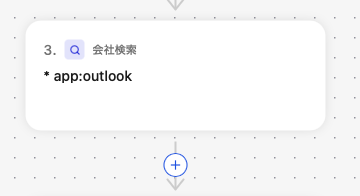

Glean Agentsは、企業内でAIエージェントを構築・調整・管理するための包括的なプラットフォーム機能であり、様々な業務オペレーションにおけるAI導入の拡大を目的としています。ユーザーは自然言語を用いてパーソナライズされたエージェントを作成でき、特定のタスクに合わせてカスタマイズ可能な事前構築済みエージェントのライブラリも提供されます。Glean Agentsは、企業データと外部情報に基づく複雑なワークフローを処理するエージェント型推論エンジンで動作します。
本プラットフォームはエージェント構築を支援するだけでなく、データセキュリティとコンプライアンスを確保するガバナンス措置を組み込んでおり、部門横断的な生産性向上とプロセス自動化を実現する戦略的ツールです。
In this lab we will:
- 既存のエージェントを探索し、その拡張方法を学びます。
- Q&Aチャットボットエージェントを作成する
- ゼロからエージェントを構築する
- 既存エージェントの学習と拡張方法
すでにログイン済みの方は、次のステップへ直接お進みください。そうでない場合は、以下の手順に従ってまずログインしてください。
ブラウザで https://app.glean.com/chat/agents にアクセスすると、Gleanのログインページにリダイレクトされます。

ワークショップモデレーターから提供されたメールアドレスを入力してください。
まず「仕事用メールアドレス」欄にメールアドレスを入力し、「ログイン」ボタンをクリックしてください。
以下のような画面が表示されます。
ワークショップモデレーターから提供されたパスワードを入力し、「サインイン」ボタンをクリックしてください。

完了後、Glean Agentsページにリダイレクトされます。
おめでとうございます！ガイドのこのステップを無事に完了しました。Oktaを介したシングルサインオン認証プロセスにより、Gleanが組織のID管理システムとシームレスに連携していることが実証されました。この合理化されたログイン体験により、追加の認証情報を入力する必要がなくなり、企業リソースへの安全なアクセスが確保されます。
下の「次へ」をクリックして次のステップに進んでください。
Glean Agentは、AIを搭載したツールであり、情報収集、データ要約、過去のステップに基づく意思決定といったアクションを処理することで、単純な作業から複雑なワークフローまで、タスクを自動化します。
特定の事象が発生した際にエージェントが動作を開始するよう設定でき、変化する入力に適応しながら一連のアクションを実行します。これにより、作業が効率化され、反復的または詳細なプロセスにかかる時間を節約できます。
Glean Actionsを使うとエージェントの実行結果をメッセージや資料としてアップデートしたり、各業務アプリケーションに対して更新を行ったり、データベースからデータを取得することができます。
以下のようなActionsを利用することができます。
また、Gleanでは「Glean Model Hub」を介してエージェントごと、タスクごとにLLMを自由に選択することが可能です。
Agentは誰のためのものですか？
以下の表は、エージェントと相互作用できる役割とそのデフォルトの権限を説明しています：
Role | Permission |
Default Member | メンバーがエージェントを作成または共有できるかは、デフォルトのメンバー権限によって管理されます。 |
Agent Creator | 自身のエージェントの作成、編集、削除が許可されています。他のユーザーのエージェント設定は閲覧可能ですが、編集には適切な権限が必要です。「エージェントの共有と公開を許可」のデフォルト設定がオフの場合、広く共有/公開することはできません。 |
Action Creator | 自身のアクションを作成、編集、削除する。アクションはエージェントで使用する前に、管理者が有効化し管理する必要があります。 |
Agent Moderator | 作成者に関係なく、あらゆるエージェントの作成、編集、削除、閲覧、フィーチャー表示、共有、公開が可能です。この役割には、組織全体でのエージェントのコンプライアンス遵守と効果的な利用を確保するための監督権限が含まれます。 |
Admin | すべての権限を保持し、任意のユーザーにエージェント作成者またはエージェントモデレーターの役割を割り当てることも可能です。組織全体のエージェント設定と権限を管理できます。 |
作成可能なエージェントの例
エージェントの作成においては、可能性はほぼ無限大です。どんなタスクでも、自由に好きな方法で解決するエージェントを作成できます。作成できるエージェントの例をいくつか挙げます：
- 営業見込み客へのアプローチ：
営業見込み客の調査とアプローチメッセージの生成を自動化します。
- サポートチケットの次工程：
進行中のサポートチケット活動を要約し、解決に向けた推奨次工程を提供します。
- エンジニアリング自己評価：
指定期間内のユーザーの全活動を分析し、業績評価用の自己評価文書を生成します。
- プルリクエストレビュアー：
ソフトウェアプルリクエストのレビューと説明文生成を自動化します。
- 会議要約：
過去の会議を包括的にレビューし、アクションアイテム、関連文書、追加フィードバックのための相談専門家をまとめます。
- 顧客満足度スコア：
社内ナレッジ、会話、サポートチケットなどを分析し、包括的な満足度スコアを生成します。
- デイリーダイジェストエージェント
関連する会議メモ、更新情報、対応が必要なタスクの毎日の要約を提供します。

これらのエージェントを導入することで、複雑なタスクを自動化し、時間を節約し、反復的な作業を回避し、同僚や顧客の成果を向上させることができます。
早速エージェントを作ってみましょう。今回は社内の更新方法を自動で収集しレポートしてくれるエージェントを作成します。
左のナビゲーションバーからGlean Agentsのアイコンを選択し「エージェントを作成」をクリックしてください。
「AIを使用して下書きを生成」を選択します。このモードを利用すると自然言語で作りたいエージェントを記述するとワークフローを推定し自動生成してくれます。
以下のプロンプトを入力します。（本来はできるだけ具体的に書くことがベストです！）
「強化」のボタンを押すと入力した内容をAIがブラッシュアップしてくれます。
「エージェントを生成」をクリックすると以下のようなワークフローが作成されるはずです 🪄
まずはこのエージェントをそのまま試してみましょう。「プレビュー」をクリックして「エージェントを実行」します。
実行され、有用な情報が取得されているように見えますが、もう少し改善してみます。
「トリガー」を選択し、「エージェントのスケジュール実行を許可」をチェックします。これによりエージェントを日次や週次でスケジューリングし、自動実行できます。
トリガーにはこのほかに「チャットメッセージトリガー」、「コンテンツトリガー」などがありチャットメッセージやコンテンツの更新情報をトリガーにエージェントを稼働させることができます。
次に「1.会社検索」を選択し、検索指示を以下に変更してください。
次に「2.会社検索」を選択し、検索指示を以下に変更してください。
次に「3..会社検索」を選択し、「手動」に切り替え、以下の検索クエリを「追加」してください。
自然言語だけでなくクエリを明確に指定し検索を実行することも可能です。
次に以下の例のように矢印にマウスオーバーしステップを追加ボタンをクリックしてください。

会社検索を選択してください。(そのほかにもどのようなステップが追加できるか、自由に探してみてください。)

「手動」を選択し、以下の二つのクエリーを追加します。
最後に検索結果の件数を「10件の結果」に変更します。

次に「応答」をクリックし、応答指示を以下に変更してください。
以下のようになります。
再度矢印をマウスオーバーし、ステップを追加します。
ステップの検索BOXから「slack」を検索して選択してください。
以下のプロンプトを入力します。
このタスクは非常に軽い処理になるのでLLMの選択メニューからGPT-4.1 miniを選択してLLMを変更してください。(どのようなLLMが選択可能か、自由に検索してみてください。)
以上でエージェントの作成は完了です👏
「プレビュー」から「エージェントを実行」してどのような結果になるか試してみましょう。
最初の実行よりもより有益な情報になっているはずです！(Slackと連携していないため、の送信のステップはエラーになるはずです。)
このようにGleanでは
次はConversational Agentを作成する手順をご説明します。左上の矢印をクリックしてエージェントディレクトリに戻ってください。

https://app.glean.com/chat/agents に直接アクセスするか、Glean メニューの次のパスから移動することもできます: チャット > エージェント。
画面右上の「+ エージェントを作成」をクリックしてください。

これにより、以下の図のように「エージェント作成」ポップアップウィンドウが開きます：

テンプレートを選択
Gleanが提供するすべてのテンプレートを自由に閲覧し、構築を迅速に開始してください。
また、エージェントの意図を自然言語で記述してエージェントを作成する機能もあります（AIを使用して下書きを生成）。
このエージェントでは、「Q&Aチャットボット」というテンプレートを使用します。そのテンプレートカードをクリックしてください。

これにより、以下のようなキャンバスを持つ新しいエージェントが生成されます：

このエージェントの名前を変更します。デフォルト名の左上にある鉛筆アイコンをクリックし、図のように変更します：

ポップアップウィンドウでエージェント名を入力してください。[Your Name]を実際のお名前(や識別可能な文字列)に置き換えてください。これにより、このワークショップの全ユーザーを区別できます。必要に応じて説明文も自由に変更してください。

ステップ 0 - Trigger
0. trigger をクリックしてこのステップを設定します。会話のきっかけとなる質問をいくつか追加し、ユーザーが会話を始める際に使用できるサンプル質問を提供します。
会話のきっかけの下にある「+ 追加」ボタンをクリックします。

会話の開始ラベルには「有給休暇残高照会」と入力し、入力プロンプトボックスには以下を入力してください：
会話のきっかけとなるプロンプトは、以下のような形式になるはずです：

ラベル「休暇制度」を追加し、以下のプロンプトを設定してください：

ステップ 1 - Branch
1. Plan & execute steps のアクションカードを選択して設定を開きます。このステップを分岐アクションに切り替えます。右上の「アクションを切り替える」ボタンをクリックしてください。

ステップ選択の検索バーに「branch」と入力し、図のようにブランチアクションを選択します：

新しいビューは次のようになります：

設定の「ブランチ条件」セクションで、「次の場合にこのブランチを選択する」プロンプトウィンドウに以下のテキストを入力してください：
設定ウィンドウは以下のような表示になるはずです：

図のように、Fallbackブランチの下にあるプラスアイコンをクリックしてください：

図のように「選択」ステップの検索ボックスに「plan」と入力し、プランを選択して「ステップを実行」アクションを選択します。

次のステップでは、指示書を作成し、人事関連の問い合わせに対応するために必要な知識ソースを選択します。
計画と実行ステップのアクションで、以下の指示を指示テキストボックスに入力してください。

会社検索セクションのテキストボックスをクリックすると、ユーザーの質問に回答するために使用されるインデックス付きコンテンツの検索が開始されます。
「gco」と入力し、検索結果の下部にある「See all results for "gco"」リンクをクリックしてください。

「Add a knowledge source」ポップアップウィンドウで、(Demo) GCo. HR Policiesフォルダーにカーソルを合わせ、図のように「Add Item」ボタンをクリックします：

検索ウィンドウを閉じるには、ポップアップの右上隅にあるXボタンをクリックしてください。

計画と実行の手順は、以下のようなものになるはずです：
次に、ユーザーが有給休暇について問い合わせた場合の分岐の下にあるステップを設定します。デザインキャンバスで、最初の分岐の下にあるプラスアイコンをクリックしてください：

ステップ選択の検索ボックスに「workday」と入力し、図のように「Workday: Get Paid Time Off Availabilit」を選択します。

これは本Gleanインスタンスに登録されたカスタムアクションです。ご覧の通り、このアクションはAPI経由でリアルタイムに呼び出しを行い、ユーザーの有給休暇残高を取得します。
「Workday: Get Paid Time Off Availability」アクション設定画面の「Instruction」ウィンドウに「残りの有給休暇日数は？」と入力してください。

ユーザーの有給休暇残高を取得しましたので、その情報をユーザーに返信する必要があります。
「Workday: Get Paid Time Off Availabilit」アクションの下で、プラスアイコンをクリックしてステップを追加します。

Search for and select the Respond Action.

AI応答指示テキストボックスに、以下を入力してください：
あなたの対応アクションは、以下のようなものになるはずです：

新しい人事Q&Aチャットボットが完成しました！右上の「保存」ボタンをクリックしてください。

さあ、試してみましょう！右上隅のプレビューボタンをクリックしてテストハーネスウィンドウを開きます。

設定で指定したテキストをチャットウィンドウに事前入力するために、会話の開始ツールが使用できることがわかります。

新しいエージェントに対して、"Conversation startes" を試すか、または質問を自由に投げかけてください。
有給休暇について質問する場合、またはその話題をきっかけにすると、チャットボットは「Workday: 有給休暇の取得可能日を確認するアクション」を呼び出す必要があります。それ以外の質問については、(デモ) GCo. HRポリシーフォルダ内のコンテンツから直接回答してください。
このラボでは、AIエージェントがもはや概念的なツールではなく、現代企業において具体的でアクセス可能かつ変革をもたらす構成要素であることを実証しました。実践的な探求を通じて、Gleanのエージェントプラットフォームを活用して重要なワークフローを自動化し、多様なデータソースを統合し、厳格なガバナンスとセキュリティ基準を維持する方法を学びました。「Plan My Day Agent」のような既成ソリューションの分析や、人事Q&Aチャットボットなどのカスタムツール構築を通じて、分岐ロジック、外部システム連携（例：Workday）、複雑なタスクの柔軟なオーケストレーションに関する実践的知見を得られました。
この経験から得られた3つの核心的知見は以下の通りです：
- Gleanエージェントは、コーディングの専門知識の有無にかかわらず、ユーザーがほぼあらゆる業務機能向けに強力でパーソナライズされた自動化を構築することを可能にします。
- プラットフォームのエージェント型推論エンジンは、多段階かつ文脈認識型のプロセス処理に優れ、実行可能な洞察を可視化し、部門横断的な時間削減を実現します。
- セキュリティ、コンプライアンス、データ整合性が組み込まれているため、これらの自動化は企業導入に信頼性があります。
組織が効率性、拡張性、革新性を追求し続ける中、Glean Agentsは継続的な自動化と戦略的変革のための強固な基盤を築きます。